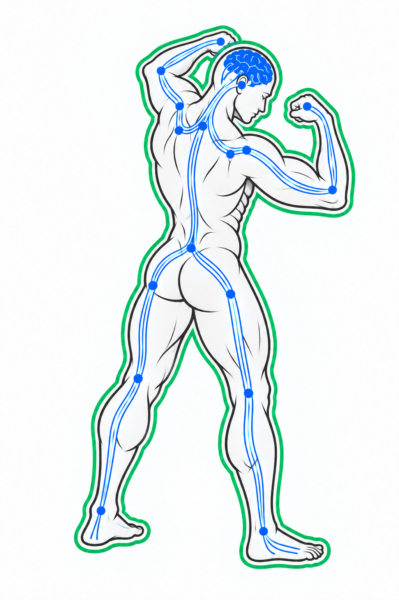
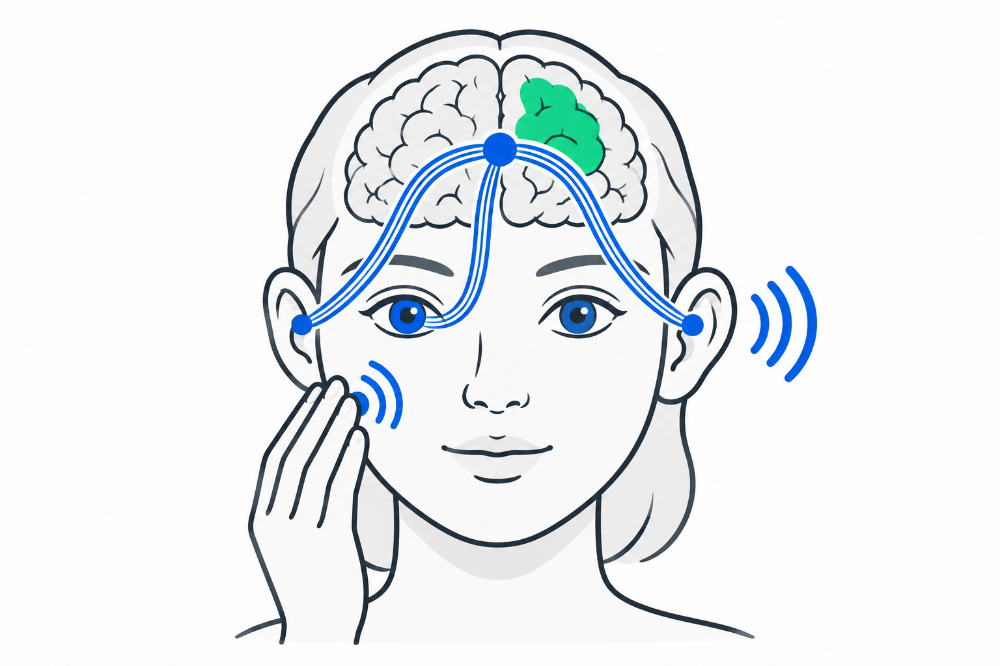
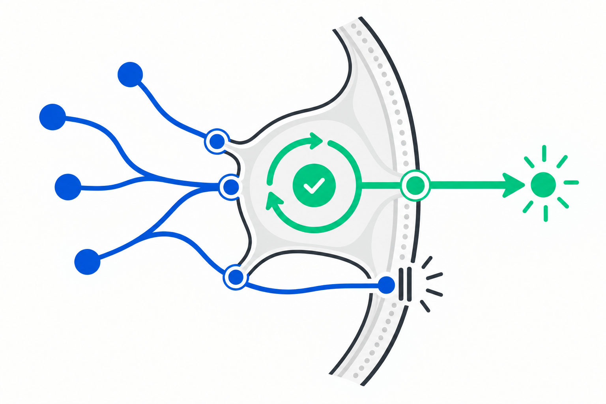
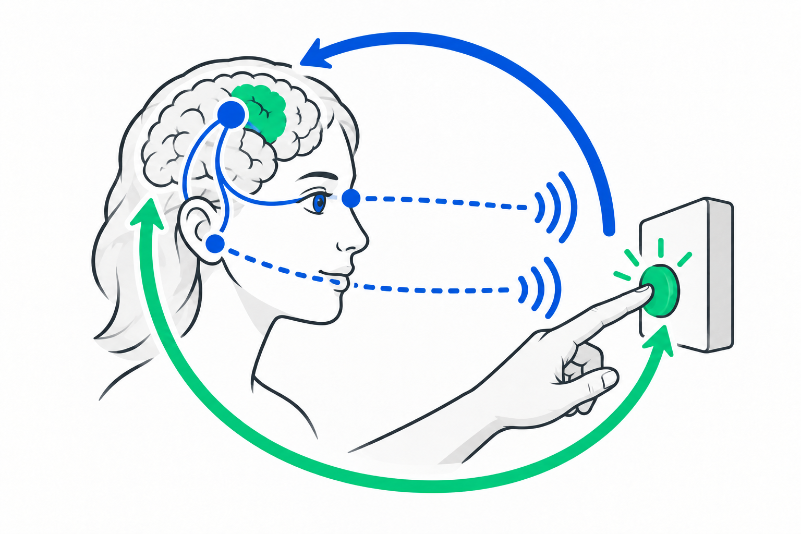
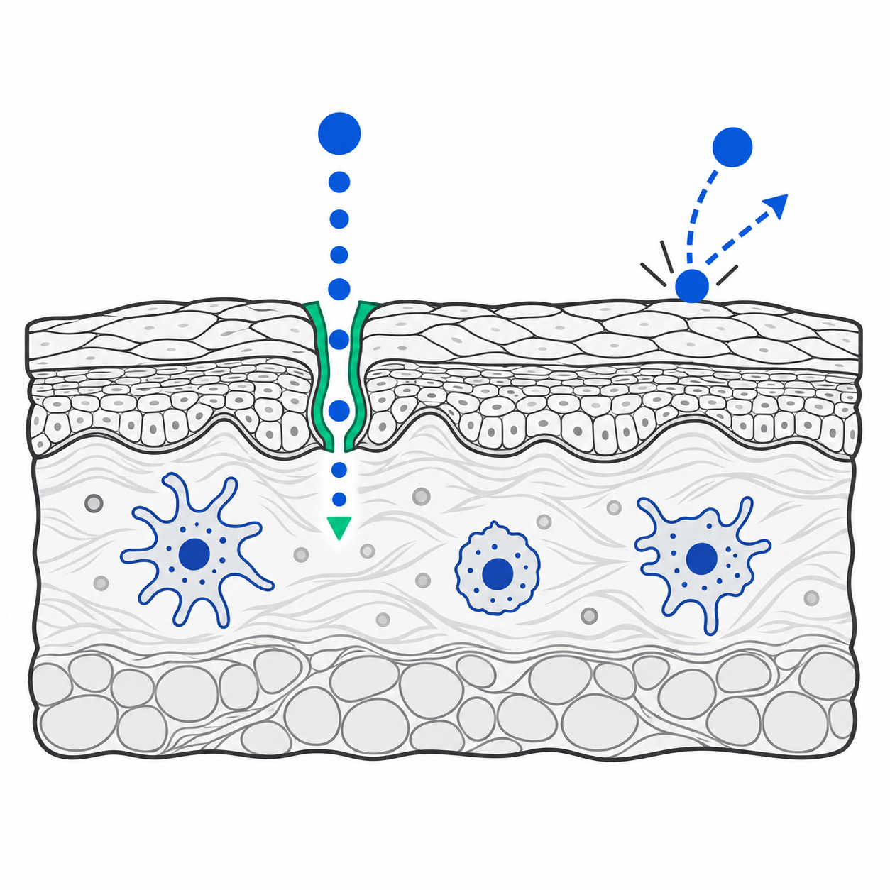

From Market Signals to a NUGES Campaign Ready to Execute
One shared team build: real market evidence plus approved NUGES context becomes a validated campaign brief and execution starter pack.

Capability metaphor: coordinated strength and connected action. Instructional anatomy only. Not a claim that AI is human or biologically equivalent.
Nine stages the team completes together
This is the order of the room. Each capability below powers specific stages of it.
Stages 1 to 4 are powered by Observe and Retrieve. Stage 5 and 6 by Create. Stage 7 by Communicate. Stage 8 by Operate. Stage 9 is the control layer.
Observe, Retrieve, Create, Communicate, Operate
Choose one capability. Its visual, room action and artifact appear below.
Observe. Use the browser to read the market before any strategy claim is written.

| Source | Date | Signal | Status |
|---|---|---|---|
| Google Trends | [ADD] | Category language cue | |
| Meta Ad Library | [ADD] | Creative pattern | |
| Public site or channel | [ADD] | Positioning or format cue |
Boundary: public evidence supports observation. It does not establish internal NUGES truth or competitor performance.
Retrieve. Pull only approved NUGES context from the Class 1 knowledge base.

| Capability | Approved source | Audience relevance | Missing proof |
|---|---|---|---|
| [FROM KNOWLEDGE BASE] | Approved NUGES context | [MAP TO DECISION CRITERIA] | [NUGES TO CONFIRM] Context owner: verify source. |
| [FROM KNOWLEDGE BASE] | Approved NUGES context | [MAP TO AUDIENCE NEED] | [NUGES TO CONFIRM] Strategy lead: request proof. |
Boundary: a connection or a stored note is not proof. If no approved source exists, hold the claim.
Create. Draft the brief, the big idea and its channel cascade in the shared document.

Boundary: the central message is fixed by the brief. The big idea and every reason to believe still have to earn their place.
Communicate. Route an internal review in the channel the team already uses.

Boundary: a draft message is not a sent message. Nothing leaves the room until the designated approval role records it.
Operate. Turn the approved direction into owned, dependent, gated work.

| Workstream | Deliverable | Owner role | Approval | Next action |
|---|---|---|---|---|
| Strategy | Validated brief | Strategy lead | Context owner | Resolve confirmations |
| Creative | Big-idea options | Creative lead | Strategy lead | Internal drafts only |
| Channel | Cascade plan | Strategy lead | External-release approver | Hold activation |
| Control | Register | Context owner | External-release approver | Document decision |
Boundary: this updates planning state in the shared document. It does not launch ads, spend or outreach.
Validate. Permission. Approve.
Stage 9. Applied to every claim, every draft and every tool the team touches.

Roles first. Names assigned in the room. Hold, revise or confirm until the path is clean.
One package leaves the room
Validated brief. Execution starter pack. Control register. No external action.
Brief · starter pack · validation register · unresolved items with owners and next actions